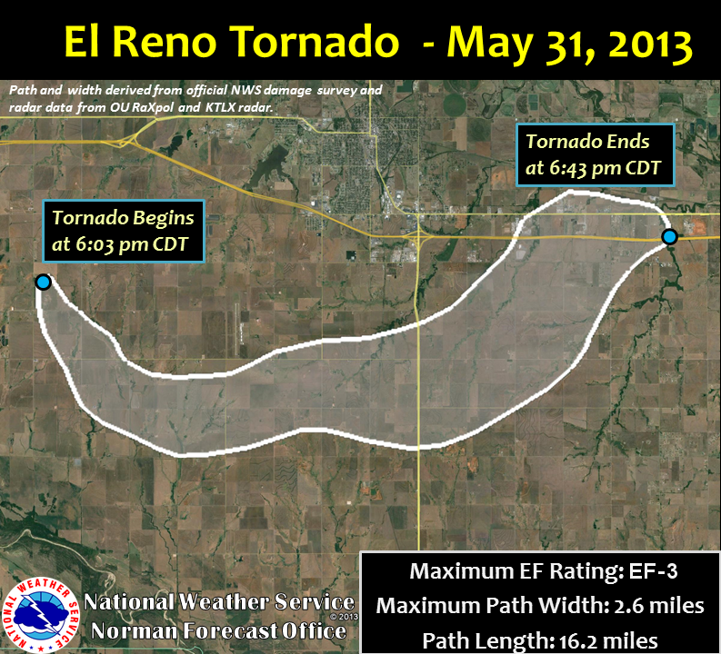
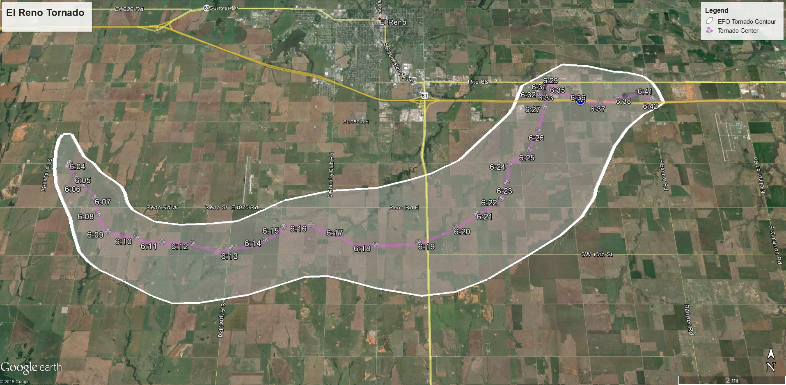

Understanding Tornadoes
What Is a Tornado?
A tornado is a rapidly rotating column of air that extends from a thunderstorm down to the ground. These storms can cause major damage in just a few minutes. Tornadoes usually form when warm, moist air meets cool, dry air, creating strong winds and unstable weather conditions.
Where and When They Happen
Most tornadoes occur in an area of the United States known as Tornado Alley, which includes states like Texas, Oklahoma, and Kansas. They can happen any time of year but are most common in the spring and early summer months when weather conditions are just right for severe storms.
- Wind speeds can exceed 200 miles per hour during powerful tornadoes.
- Destructive wind fields can stretch up to one mile in diameter or more.
- Tornadoes can form and dissipate within a matter of minutes, making them highly unpredictable.
- They are detected and tracked using Doppler radar technology.
- Meteorologists often identify signs of potential tornado development earlier in the day, such as strong wind shear or rotating storm cells.
- Tornado strength is measured on the Enhanced Fujita (EF) Scale, ranging from EF0 to EF5.
Facts About Tornadoes
National Weather Service | NOAA

